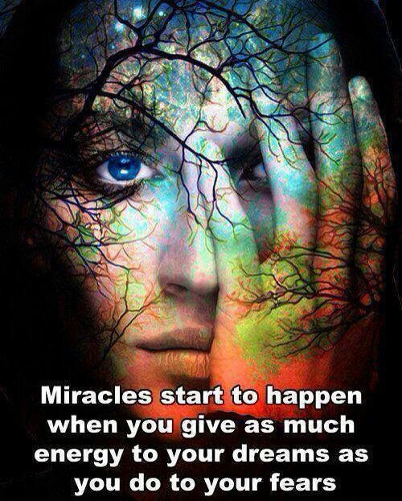
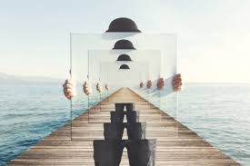
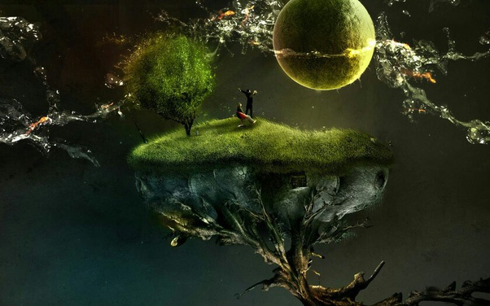

How do you believe in a mystery, in something you don't understand and can't prove? When we're children we're encouraged to believe in some mysterious things that turn out to not necessarily be true at all -- things like the Tooth Fairy, the Easter Bunny or the flag. Naturally, we're disappointed after our illusions have been shattered, but usually we get over it. Some of us, however, become skeptical, even cynical, after that. We live in a universe that is infinite in all directions… even if it curves back on itself.
You cannot see beyond its horizons.
You cannot taste all of its fruits—human scales are too small.
You cannot know even a small fraction of its mysteries—you can, at best, uncover one or two plausible insights as you journey through the void.
The choice that you should make is not which mysteries to believe in (my dog believes in the mysterious power of ball and stick and tug—belief is an empty bowl), but which “truths” to challenge.
I believe in mystery because every answer to every question starts with at least one assumption, and assumptions are not knowledge.
I don’t believe in fairies, lizard people, a flat earth, angry gods, because the base assumptions informing these beliefs stem from fear of mystery.

Every energy of Ph-value what you eat ,Every element what is around you is vibrating with different different level of energy and every level is programed with different value of feelings , emotions, fear , entity , time , language etc.
As all knows a strong focus for a little moment, a desires, a concentration makes dream and the focused subject, views, etc. Comes in dream with a calculative storys which make us feel, for a good memories,
When we focus on a subject for a little bit all the related feeling, imaj, entity what is unknown for us are also comes in our dream,, This is the Q-fact always happens .!
according to FFEDTRICAL the universal science :
What we think, everything else what we imagine here is existence with any form, any shape, any where it can be in reality in practical world but could be any time dilation.Means!
A great statement is:
In the entire universe what is possible to be happen we can't think ,we can't imagine, more than ,meansWhose face did you create in your mind ACCTUALY she has existence in this world any where she could be around in any time but imagination will be happens is truth.!.!.!
What did you imagine it could be in videos, imaj on a paper which is made by your sending Fz. Which received creative painter , it could be happened in past, happening in present or mey be in future, it could be exists already in nature may be viewed any angle of the shape, ya nature will create for you at a perfect time ,,
And one day your imagination become true in time dilation ,but it happens, because
energy not creates or can't be destroy it transforms to another shapes.!.!.!
A mysterious Q-fact is hidden inside.?.?.;?
END:
So Why to believe in mysteries? What do you mean? They exist so I know they are out there. It isn’t a belief that mysteries exist it’s a fact. In fact it’s a mystery to me what you were trying to ask and it seems like maybe it’s a mystery to you how to ask it. Feel me?
So what are ur thoughts ? Write to me!!
